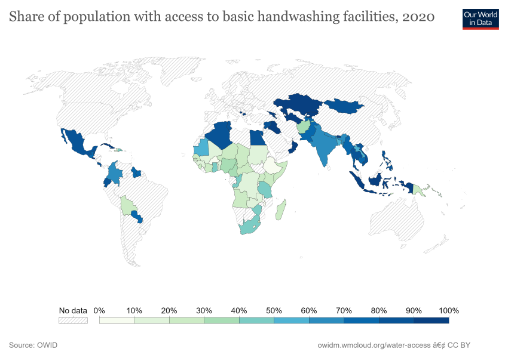
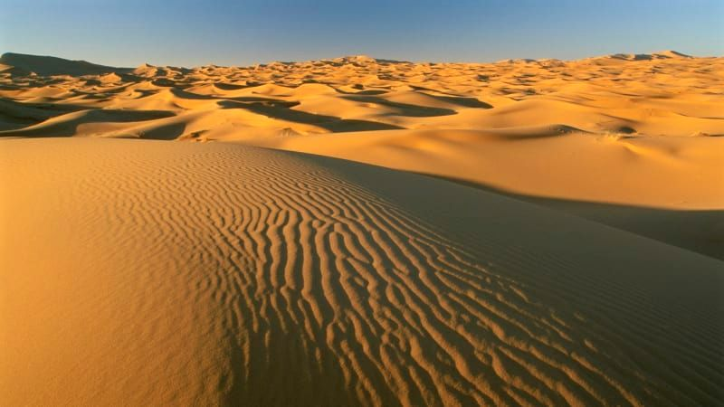
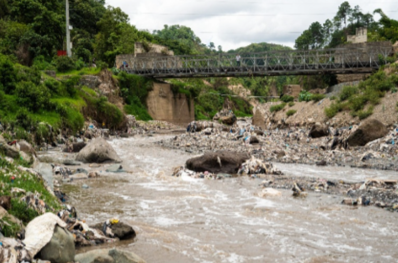
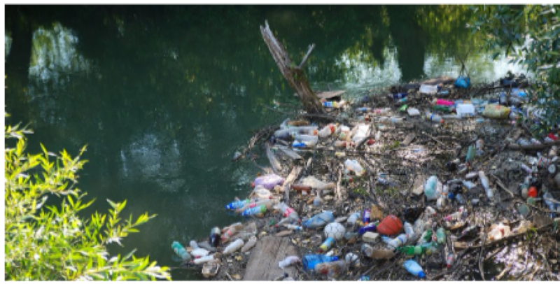
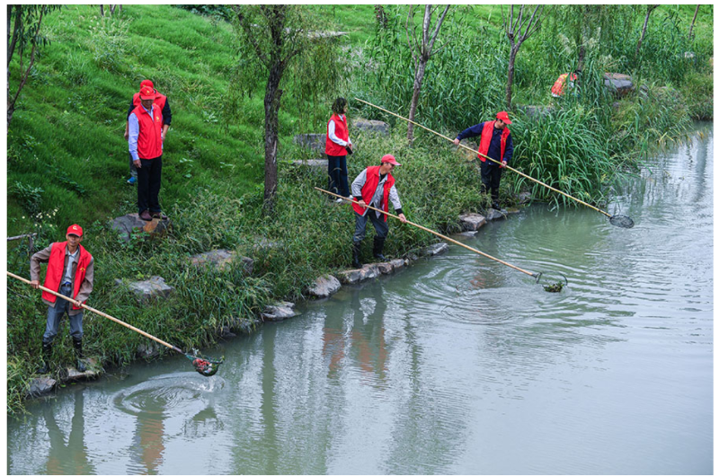
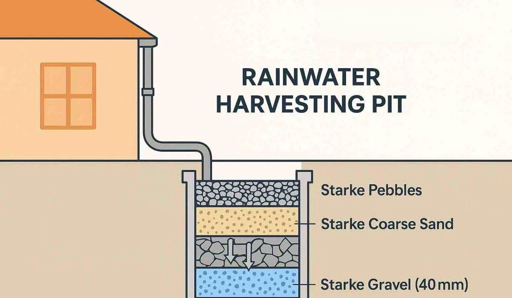
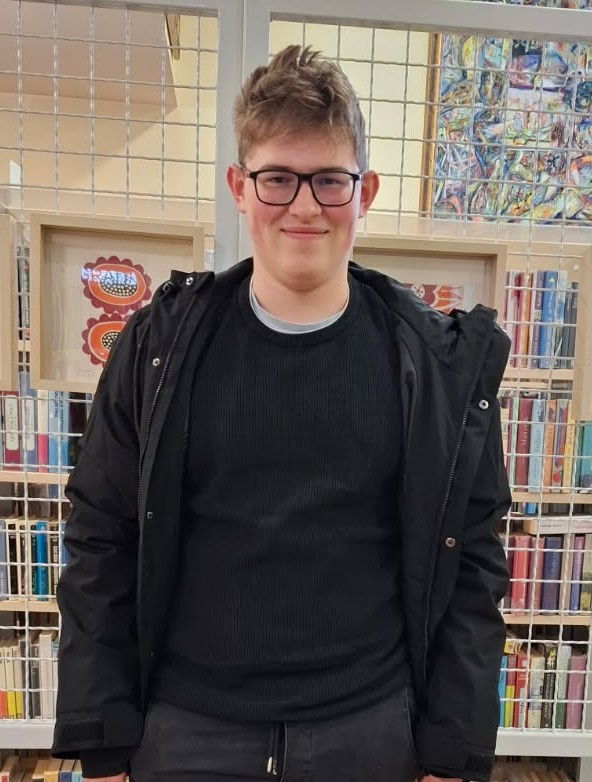
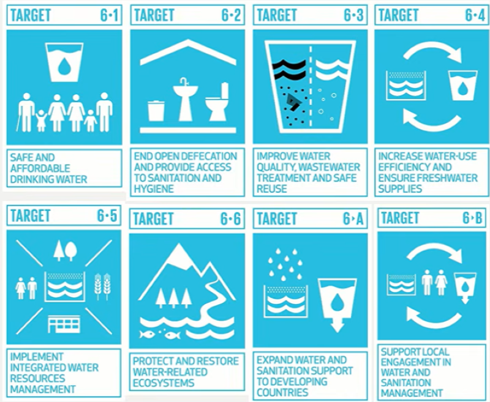

Safe drinking water
Universal and equitable access to safe and affordable drinking water for all.
Water is the foundation of health, dignity and opportunity. Goal 6 calls on the world to ensure safe water, sanitation and hygiene for all people by 2030.
people still lack safely managed drinking water
people still lack safely managed sanitation
people still lack basic hygiene services at home
people still practice open defecation
Figures for 2024 · WHO/UNICEF Joint Monitoring Programme (JMP), 2025 report
SDG 6 is one of the 17 Sustainable Development Goals adopted by all UN member states in 2015. Its aim is to ensure availability and sustainable management of water and sanitation for all.
Safe water keeps children in school, protects communities from disease and gives people time back for work and education. Clean water also supports food production, energy, healthy ecosystems and resilience to climate change.
Goal 6 is broken down into measurable targets that cover every part of the water cycle, from the tap to the toilet to the river.
Universal and equitable access to safe and affordable drinking water for all.
Adequate and equitable sanitation and hygiene for all, and an end to open defecation.
Reduce pollution, eliminate dumping and halve the proportion of untreated wastewater.
Use water more efficiently in every sector and tackle water scarcity.
Manage water resources in an integrated way, including across national borders.
Protect and restore mountains, forests, wetlands, rivers, aquifers and lakes.
Expand international support and capacity-building for developing countries in water and sanitation activities.
Support and strengthen the participation of local communities in improving water and sanitation management.
Reaching everyone by 2030 will take action from governments, organizations and ordinary people. Here is where the biggest gaps are, and what each of us can do.
In fragile contexts, safely managed drinking water coverage is 38 percentage points lower than in other countries.
People there are more than twice as likely to lack basic drinking water and sanitation, and more than three times as likely to lack basic hygiene.
Rural areas have improved but still lag behind, while drinking water and hygiene coverage in urban areas has stagnated.
354 million people still practice it. Toilets that safely contain and treat waste protect health and dignity.
Clean rivers, lakes and aquifers, and treated wastewater, keep drinking water safe for everyone downstream.
Using water more efficiently in homes, farms and industry eases scarcity and protects the supply for everyone.
Since 2000, billions of people have gained access to safer water and sanitation. That is real progress, and it shows that change is possible.
Since 2015, hundreds of millions of people have gained safe services, yet universal coverage by 2030 looks increasingly out of reach at the current pace. People in fragile contexts and rural areas are most often left behind.
more people use safely managed drinking water. The number still lacking it fell by 270 million.
more people use safely managed sanitation. Those without it fell from 3.9 billion to 3.4 billion.
more people gained basic hygiene services. Those without fell from 2.5 billion to 1.7 billion.
The Millennium Development Goals set the first worldwide target: halve the share of people without safe drinking water and basic sanitation by 2015.
The UN General Assembly recognizes safe and clean drinking water and sanitation as a human right.
UN agencies announce that the world has met the Millennium drinking water target, five years ahead of the 2015 deadline.
All UN member states adopt the 2030 Agenda with a goal just for water and sanitation. At the time, 68% of people used safely managed drinking water and 48% safely managed sanitation.
Governments meet in New York for the first UN conference on water in 46 years and launch the Water Action Agenda of voluntary commitments.
74% of people now use safely managed drinking water and 58% safely managed sanitation. Since 2000, 2.2 billion gained safe water and 2.8 billion safe sanitation.
Sources: United Nations; WHO/UNICEF Joint Monitoring Programme (JMP), 2025 report
Pictures and stories that show why clean water and sanitation matter.

The amount of people who lack safe drinking water is still quite high. SDG 6 is trying to make that number as close to 0 as possible.

Sanitation in this case means people having access to facillities for safe disposal of human waste and also basic hygiene.

SDG 6 also battles against water scarcity and not just drinkable water. This mostly applies to nature which doesn't need water as clean as a human.
If it all goes to plan, clean rivers, thriving wetlands, restored forests, and healthy wildlife habitats flourish without pollution or drought.

Sadly a lot of rivers are filled with trash and microplastics which endangers the local water life of that river.

In lakes the polution is quite more significant beacuse the water is closed and it has nowhere to go so the trash keeps piling up inside the lake.

If we want clean lakes and rivers we need to make a change. There is a lot of volunteers who help locals by cleaning the trash out.

Wastewater is treated in large aeration tanks, where air and helpful microorganisms break down pollutants before the water is safely released.

Rainwater harvesting collects and stores rain for later use, helping save drinking water and providing a sustainable source for everyday needs.
.jpg)
2. year of school of electrical engineering and computer science, co.creator of this site. My goal is to make body of waters cleaner.

2. year of school of electrical engineering and computer science, co.creator of this site. My goal is to reduce the amount of water in households.

SDG 6 isn't just about clean water and hygiene. It also targets untreated wastewater and promotes transboundary resource management.
Hello I'm Maks, the cocreator of this site. In this youtube video you will get to know me and my goals.
Hey there I'm Domen. I'm the cocreator of this site. I made a youtube video so you will get to know my interests.
Throw your tool from the boat and pull plastic out of the sea. Sell it, upgrade your gear by answering SDG 6 questions and donate to the Clean Water Fund. The game ends when the whole ocean is clean.
Tip: click the sea to throw. Press S to sell and Esc to pause. The tiny sparkles are microplastics, you need the Micro-filter for those.